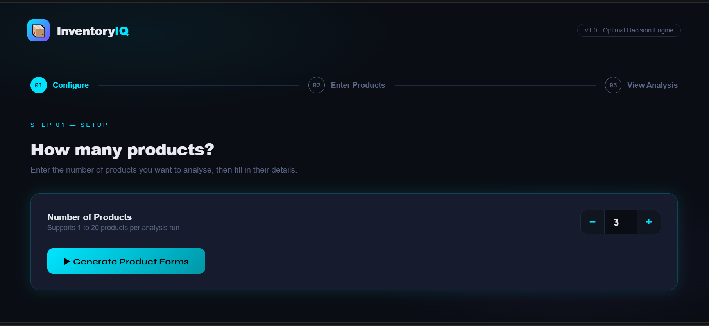

03 — SOFTWARE PROJECT
InventoryIQ
An inventory management project designed to organize product information and make inventory tracking more structured and efficient.
OVERVIEW
Making inventory easier to manage.
InventoryIQ was designed as a system for managing product and inventory information in a structured way. The project focuses on making important inventory information easier to organize and access.
MY WORK
What I focused on
Product Management
Organized product information so inventory records could be managed more efficiently.
Inventory Tracking
Designed the system around keeping inventory information structured and accessible.
User Interface
Focused on creating a clear interface that makes important information easy to understand.
System Structure
Considered how different parts of the system work together to support inventory workflows.
PROJECT SCREENSHOT
InventoryIQ interface.

WHAT I LEARNED
Designing around real workflows.
This project helped me think about how software can organize information around real-world workflows and make frequently used data easier to manage.